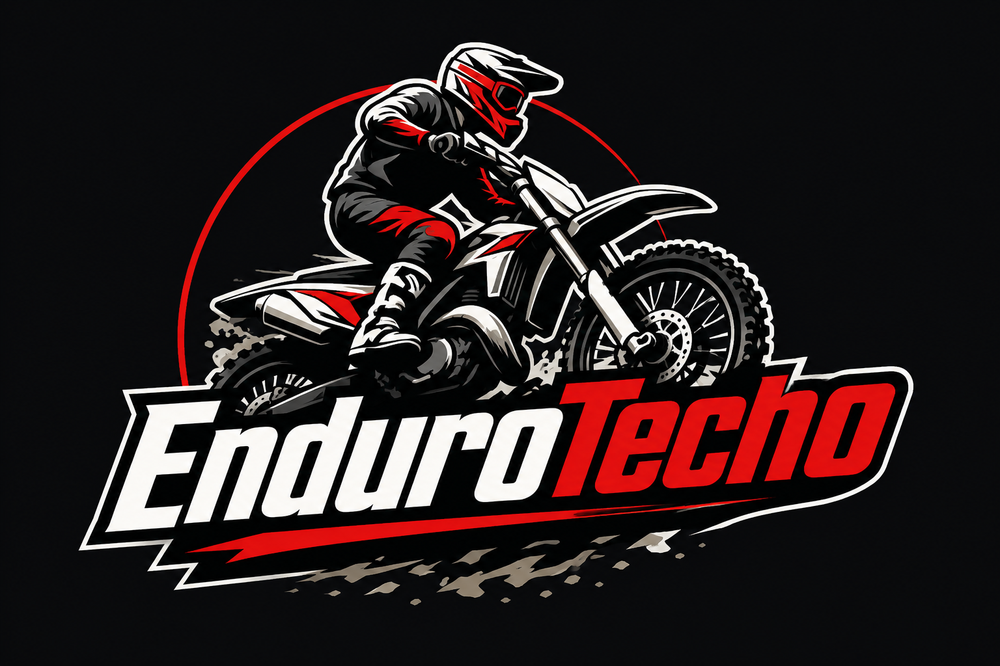

Mantenimiento y Diagnosis

Suspensiones Racing


Especialistas en mantenimiento, suspensiones, diagnosis y preparación off-road en Torrelles de Llobregat.
Ver Servicios
EnduroTech es un taller especializado en motocicletas de enduro, motocross y trial situado en Torrelles de Llobregat.
El proyecto nace con el objetivo de ofrecer un servicio técnico profesional, rápido y especializado para pilotos off-road, incluyendo mantenimiento, diagnosis electrónica, suspensiones, lavado técnico y preparación racing.
Trabajamos con herramientas profesionales, recambios de calidad y un enfoque centrado en el rendimiento, la seguridad y la atención personalizada.
Servicios específicos para enduro, motocross y trial.
Equipos multimarca y herramientas técnicas avanzadas.
Reparaciones ágiles y atención personalizada.